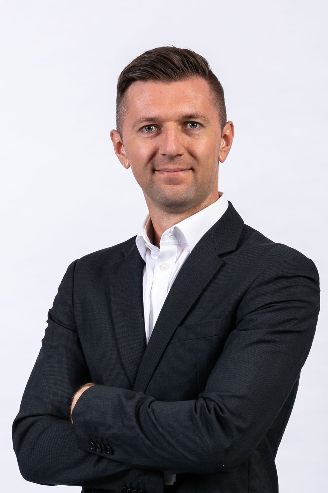

Clear judgement for complex renewable energy decisions.
Helping wind farm developers, investors, lenders, and advisory partners make better-structured decisions where technical detail, market context, and commercial consequence meet.
Founder

Founded by Stan Herasymenko, OBRAVEN draws on 17+ years across renewable energy advisory and developer roles spanning energy analysis, measurement strategy, and technical-commercial decision support. Stan previously led Mainstream Renewable Power’s global Energy Analysis Group across a multi-GW wind and solar portfolio, supported projects across 30+ countries, and brings earlier hands-on measurement delivery experience including 110+ meteorological masts and floating LiDAR work.
Core capabilities
- Energy yield, resource and measurement judgement for decision-critical projects
- Independent challenge of technical assumptions, consultant outputs and bankability logic
- Technical-commercial integration across disciplines, workstreams and decision gates
- Selected support on diligence, procurement and owner-side advisory assignments
Engagement model
- Project-based specialist support on defined decision-critical workstreams
- Independent owner-side review, challenge, and interpretation of technical outputs
-
Selected collaboration or fractional support alongside developers, advisory firms, investors, lenders, and diligence teams